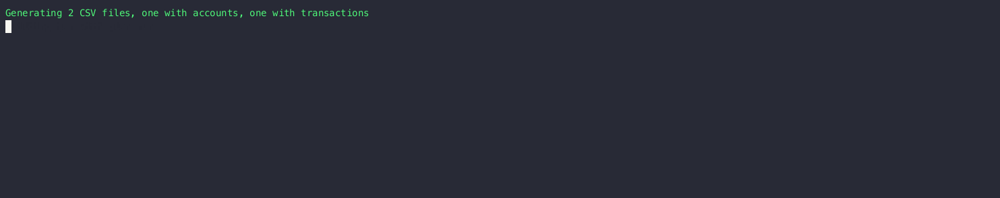
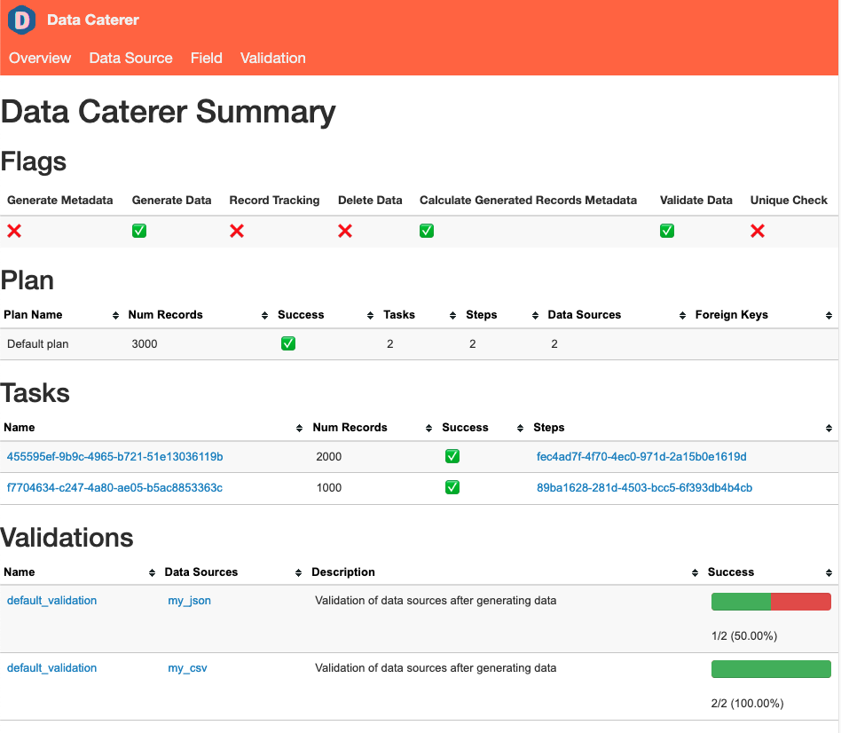

Data Generation
Go through the available options for data generation. Creating a data generator for a CSV file.

Requirements
- 5 minutes
- Git
- Gradle
- Docker
Get Started
First, we will clone the data-caterer-example repo which will already have the base project setup required.
Plan Setup
Create a new Java or Scala class or plan YAML.
- Java:
src/main/java/io/github/datacatering/plan/MyCsvPlan.java - Scala:
src/main/scala/io/github/datacatering/plan/MyCsvPlan.scala - YAML:
docker/data/customer/plan/my-csv.yaml
Make sure your class extends PlanRun.
In docker/data/custom/plan/my-csv.yaml:
Go to next section.
This class defines where we need to define all of our configurations for generating data. There are helper variables and methods defined to make it simple and easy to use.
Connection Configuration
When dealing with CSV files, we need to define a path for our generated CSV files to be saved at, along with any other high level configurations.
In docker/data/custom/application.conf:
- Go to
Connectiontab in the top bar - Select data source as
CSV- Enter in data source name
customer_accounts - Enter path as
/tmp/data-caterer/customer/account
- Enter in data source name
Schema
Our CSV file that we generate should adhere to a defined schema where we can also define data types.
Let's define each field along with their corresponding data type. You will notice that the string fields do not have a
data type defined. This is because the default data type is StringType.
var accountTask = csv("customer_accounts", "/opt/app/data/customer/account", Map.of("header", "true"))
.fields(
field().name("account_id"),
field().name("balance").type(DoubleType.instance()),
field().name("created_by"),
field().name("name"),
field().name("open_time").type(TimestampType.instance()),
field().name("status")
);
In docker/data/custom/task/file/csv/csv-account-task.yaml:
- Go to
Hometab in the top bar - Enter
my-csvas thePlan name - Under
Tasks, entercsv-account-taskasTask nameand select data source ascustomer_accounts - Click on
Generationand tick theManualcheckbox - Click on
+ Field- Add field
account_idwith typestring - Add field
balancewith typedouble - Add field
created_bywith typestring - Add field
namewith typestring - Add field
open_timewith typetimestamp - Add field
statuswith typestring
- Add field
Field Metadata
We could stop here and generate random data for the accounts table. But wouldn't it be more useful if we produced data that is closer to the structure of the data that would come in production? We can do this by defining various metadata attributes that add guidelines that the data generator will understand when generating data.
account_id
account_idfollows a particular pattern that where it starts withACCand has 8 digits after it. This can be defined via a regex like below. Alongside, we also mention that values are unique ensure that unique values are generated.
- Go to
account_idfield - Click on
+dropdown next tostringdata type - Click
Regexand enterACC[0-9]{8} - Click
Uniqueand selecttrue
balance
balancelet's make the numbers not too large, so we can define a min and max for the generated numbers to be between1and1000.
- Go to
balancefield - Click on
+dropdown next todoubledata type - Click
Minand enter1 - Click
Maxand enter1000
name
nameis a string that also follows a certain pattern, so we could also define a regex but here we will choose to leverage the DataFaker library and create anexpressionto generate real looking name. All possible faker expressions can be found here
open_time
open_timeis a timestamp that we want to have a value greater than a specific date. We can define a min date by usingjava.sql.Datelike below.
- Go to
open_timefield - Click on
+dropdown next totimestampdata type - Click
Minand enter2022-01-01
status
statusis a field that can only obtain one of four values,open, closed, suspended or pending.
- Go to
statusfield - Click on
+dropdown next tostringdata type - Click
One Ofand enteropen,closed,suspended,pending
created_by
created_byis a field that is based on thestatusfield where it follows the logic:if status is open or closed, then it is created_by eod else created_by event. This can be achieved by defining a SQL expression like below.
- Go to
created_byfield - Click on
+dropdown next tostringdata type - Click
SQLand enterCASE WHEN status IN ('open', 'closed') THEN 'eod' ELSE 'event' END
Putting it all the fields together, our structure should now look like this.
var accountTask = csv("customer_accounts", "/opt/app/data/customer/account", Map.of("header", "true"))
.fields(
field().name("account_id").regex("ACC[0-9]{8}").unique(true),
field().name("balance").type(DoubleType.instance()).min(1).max(1000),
field().name("created_by").sql("CASE WHEN status IN ('open', 'closed') THEN 'eod' ELSE 'event' END"),
field().name("name").expression("#{Name.name}"),
field().name("open_time").type(TimestampType.instance()).min(java.sql.Date.valueOf("2022-01-01")),
field().name("status").oneOf("open", "closed", "suspended", "pending")
);
val accountTask = csv("customer_accounts", "/opt/app/data/customer/account", Map("header" -> "true"))
.fields(
field.name("account_id").regex("ACC[0-9]{8}").unique(true),
field.name("balance").`type`(DoubleType).min(1).max(1000),
field.name("created_by").sql("CASE WHEN status IN ('open', 'closed') THEN 'eod' ELSE 'event' END"),
field.name("name").expression("#{Name.name}"),
field.name("open_time").`type`(TimestampType).min(java.sql.Date.valueOf("2022-01-01")),
field.name("status").oneOf("open", "closed", "suspended", "pending")
)
In docker/data/custom/task/file/csv/csv-account-task.yaml:
name: "csv_account_file"
steps:
- name: "accounts"
type: "csv"
options:
path: "/opt/app/custom/csv/account"
count:
records: 100
fields:
- name: "account_id"
options:
regex: "ACC1[0-9]{9}"
unique: true
- name: "balance"
type: "double"
options:
min: 1
max: 1000
- name: "created_by"
options:
sql: "CASE WHEN status IN ('open', 'closed') THEN 'eod' ELSE 'event' END"
- name: "name"
options:
expression: "#{Name.name}"
- name: "open_time"
type: "timestamp"
options:
min: "2022-01-01"
- name: "status"
options:
oneOf:
- "open"
- "closed"
- "suspended"
- "pending"
Open Task and Generation to see all the fields.
Record Count
We only want to generate 100 records, so that we can see what the output looks like. This is controlled at the
accountTask level like below. If you want to generate more records, set it to the value you want.
In docker/data/custom/task/file/csv/csv-account-task.yaml:
- Under task
customer_accounts, click onGeneration - Under title
Record Count, setRecordsto100
Additional Configurations
At the end of data generation, a report gets generated that summarises the actions it performed. We can control the output folder of that report via configurations. We will also enable the unique check to ensure any unique fields will have unique values generated.
In docker/data/custom/application.conf:
- Click on
Advanced Configurationtowards the bottom of the screen - Click on
Flagand click onUnique Check - Click on
Folderand enter/tmp/data-caterer/reportforGenerated Reports Folder Path
Execute
To tell Data Caterer that we want to run with the configurations along with the accountTask, we have to call execute
. So our full plan run will look like this.
public class MyCsvJavaPlan extends PlanRun {
{
var accountTask = csv("customer_accounts", "/opt/app/data/customer/account", Map.of("header", "true"))
.fields(
field().name("account_id").regex("ACC[0-9]{8}").unique(true),
field().name("balance").type(DoubleType.instance()).min(1).max(1000),
field().name("created_by").sql("CASE WHEN status IN ('open', 'closed') THEN 'eod' ELSE 'event' END"),
field().name("name").expression("#{Name.name}"),
field().name("open_time").type(TimestampType.instance()).min(java.sql.Date.valueOf("2022-01-01")),
field().name("status").oneOf("open", "closed", "suspended", "pending")
);
var config = configuration()
.generatedReportsFolderPath("/opt/app/data/report")
.enableUniqueCheck(true);
execute(config, accountTask);
}
}
class MyCsvPlan extends PlanRun {
val accountTask = csv("customer_accounts", "/opt/app/data/customer/account", Map("header" -> "true"))
.fields(
field.name("account_id").regex("ACC[0-9]{8}").unique(true),
field.name("balance").`type`(DoubleType).min(1).max(1000),
field.name("created_by").sql("CASE WHEN status IN ('open', 'closed') THEN 'eod' ELSE 'event' END"),
field.name("name").expression("#{Name.name}"),
field.name("open_time").`type`(TimestampType).min(java.sql.Date.valueOf("2022-01-01")),
field.name("status").oneOf("open", "closed", "suspended", "pending")
)
val config = configuration
.generatedReportsFolderPath("/opt/app/data/report")
.enableUniqueCheck(true)
execute(config, accountTask)
}
Plan and task file should be ready.
- Click
Saveat the top
Run
Now we can run via the script ./run.sh that is in the top level directory of the data-caterer-example to run the
class we just created.
Your output should look like this.
account_id,balance,created_by,name,open_time,status
ACC06192462,853.9843359645766,eod,Hoyt Kertzmann MD,2023-07-22T11:17:01.713Z,closed
ACC15350419,632.5969895326234,eod,Dr. Claude White,2022-12-13T21:57:56.840Z,open
ACC25134369,592.0958847218986,eod,Fabian Rolfson,2023-04-26T04:54:41.068Z,open
ACC48021786,656.6413439322964,eod,Dewayne Stroman,2023-05-17T06:31:27.603Z,open
ACC26705211,447.2850352884595,event,Garrett Funk,2023-07-14T03:50:22.746Z,pending
ACC03150585,750.4568929015996,event,Natisha Reichel,2023-04-11T11:13:10.080Z,suspended
ACC29834210,686.4257811608622,event,Gisele Ondricka,2022-11-15T22:09:41.172Z,suspended
ACC39373863,583.5110618128994,event,Thaddeus Ortiz,2022-09-30T06:33:57.193Z,suspended
ACC39405798,989.2623959059525,eod,Shelby Reinger,2022-10-23T17:29:17.564Z,open
Also check the HTML report, found at docker/sample/report/index.html, that gets generated to get an overview of what
was executed.

Join With Another CSV
Now that we have generated some accounts, let's also try to generate a set of transactions for those accounts in CSV format as well. The transactions could be in any other format, but to keep this simple, we will continue using CSV.
We can define our schema the same way along with any additional metadata.
var transactionTask = csv("customer_transactions", "/opt/app/data/customer/transaction", Map.of("header", "true"))
.fields(
field().name("account_id"),
field().name("name"),
field().name("amount").type(DoubleType.instance()).min(1).max(100),
field().name("time").type(TimestampType.instance()).min(java.sql.Date.valueOf("2022-01-01")),
field().name("date").type(DateType.instance()).sql("DATE(time)")
);
val transactionTask = csv("customer_transactions", "/opt/app/data/customer/transaction", Map("header" -> "true"))
.fields(
field.name("account_id"),
field.name("full_name"),
field.name("amount").`type`(DoubleType).min(1).max(100),
field.name("time").`type`(TimestampType).min(java.sql.Date.valueOf("2022-01-01")),
field.name("date").`type`(DateType).sql("DATE(time)")
)
In docker/data/custom/task/file/csv/csv-account-task.yaml:
name: "csv_account_file"
steps:
- name: "accounts"
type: "csv"
options:
path: "/opt/app/custom/csv/account"
...
- name: "transactions"
type: "csv"
options:
path: "/opt/app/custom/csv/transactions"
fields:
- name: "account_id"
- name: "full_name"
- name: "amount"
type: "double"
options:
min: 1
max: 100
- name: "time"
type: "timestamp"
options:
min: "2022-01-01"
- name: "date"
type: "date"
options:
sql: "DATE(time)"
- Go to
Connectiontab and add newCSVdata source with path/tmp/data-caterer/customer/transactions - Go to
Plantab and click onEditformy-csv - Click on
+ Tasktowards the top - Under the new task, enter
csv-transaction-taskasTask nameand select data source ascustomer_accounts - Click on
Generationand tick theManualcheckbox - Click on
+ Field- Add field
account_idwith typestring - Add field
balancewith typedouble - Add field
created_bywith typestring - Add field
namewith typestring - Add field
open_timewith typetimestamp - Add field
statuswith typestring
- Add field
Records Per Field
Usually, for a given account_id, full_name, there should be multiple records for it as we want to simulate a customer
having multiple transactions. We can achieve this through defining the number of records to generate in the count
function.
In docker/data/custom/task/file/csv/csv-account-task.yaml:
- Under title
Record count, click onAdvanced - Enter
account_id,nameinField(s) - Click on
Per unique set of valuescheckbox - Set
Recordsto5
Random Records Per Field
Above, you will notice that we are generating 5 records per account_id, full_name. This is okay but still not quite
reflective of the real world. Sometimes, people have accounts with no transactions in them, or they could have many. We
can accommodate for this via defining a random number of records per field.
In docker/data/custom/task/file/csv/csv-account-task.yaml:
- Under title
Record count, click onAdvanced - Enter
account_id,nameinField(s) - Click on
Per unique set of values betweencheckbox - Set
Minto0andMax to5`
Here we set the minimum number of records per field to be 0 and the maximum to 5.
Foreign Key
In this scenario, we want to match the account_id in account to match the same field values in transaction. We
also want to match name in account to full_name in transaction. This can be done via plan configuration like
below.
In docker/data/custom/plan/my-csv.yaml:
```yaml
name: "my_csv_plan"
description: "Create account data in CSV file"
tasks:
- name: "csv_account_file"
dataSourceName: "customer_accounts"
sinkOptions: foreignKeys: - source: dataSource: "customer_accounts" step: "accounts" fields: ["account_id", "name"] generate: - dataSource: "customer_accounts" step: "transactions" fields: ["account_id", "full_name"] ```
- Click
Relationshipsand then click+ Relationship - Select
csv-account-taskand enteraccount_id,nameinField(s) - Open
Generationand click+ Link - Select
csv-transaction-taskand enteraccount_id,full_nameinField(s)
Now, stitching it all together for the execute function, our final plan should look like this.
public class MyCsvJavaPlan extends PlanRun {
{
var accountTask = csv("customer_accounts", "/opt/app/data/customer/account", Map.of("header", "true"))
.fields(
field().name("account_id").regex("ACC[0-9]{8}").unique(true),
field().name("balance").type(DoubleType.instance()).min(1).max(1000),
field().name("created_by").sql("CASE WHEN status IN ('open', 'closed') THEN 'eod' ELSE 'event' END"),
field().name("name").expression("#{Name.name}"),
field().name("open_time").type(TimestampType.instance()).min(java.sql.Date.valueOf("2022-01-01")),
field().name("status").oneOf("open", "closed", "suspended", "pending")
)
.count(count().records(100));
var transactionTask = csv("customer_transactions", "/opt/app/data/customer/transaction", Map.of("header", "true"))
.fields(
field().name("account_id"),
field().name("name"),
field().name("amount").type(DoubleType.instance()).min(1).max(100),
field().name("time").type(TimestampType.instance()).min(java.sql.Date.valueOf("2022-01-01")),
field().name("date").type(DateType.instance()).sql("DATE(time)")
)
.count(count().recordsPerFieldGenerator(generator().min(0).max(5), "account_id", "full_name"));
var config = configuration()
.generatedReportsFolderPath("/opt/app/data/report")
.enableUniqueCheck(true);
var myPlan = plan().addForeignKeyRelationship(
accountTask, List.of("account_id", "name"),
List.of(Map.entry(transactionTask, List.of("account_id", "full_name")))
);
execute(myPlan, config, accountTask, transactionTask);
}
}
class MyCsvPlan extends PlanRun {
val accountTask = csv("customer_accounts", "/opt/app/data/customer/account", Map("header" -> "true"))
.fields(
field.name("account_id").regex("ACC[0-9]{8}").unique(true),
field.name("balance").`type`(DoubleType).min(1).max(1000),
field.name("created_by").sql("CASE WHEN status IN ('open', 'closed') THEN 'eod' ELSE 'event' END"),
field.name("name").expression("#{Name.name}"),
field.name("open_time").`type`(TimestampType).min(java.sql.Date.valueOf("2022-01-01")),
field.name("status").oneOf("open", "closed", "suspended", "pending")
)
.count(count.records(100))
val transactionTask = csv("customer_transactions", "/opt/app/data/customer/transaction", Map("header" -> "true"))
.fields(
field.name("account_id"),
field.name("name"),
field.name("amount").`type`(DoubleType).min(1).max(100),
field.name("time").`type`(TimestampType).min(java.sql.Date.valueOf("2022-01-01")),
field.name("date").`type`(DateType).sql("DATE(time)")
)
.count(count.recordsPerFieldGenerator(generator.min(0).max(5), "account_id", "full_name"))
val config = configuration
.generatedReportsFolderPath("/opt/app/data/report")
.enableUniqueCheck(true)
val myPlan = plan.addForeignKeyRelationship(
accountTask, List("account_id", "name"),
List(transactionTask -> List("account_id", "full_name"))
)
execute(myPlan, config, accountTask, transactionTask)
}
Check content of docker/data/custom/plan/my-csv.yaml and docker/data/custom/task/file/csv/csv-account-task.yaml.
Open UI dropdowns to see all details.
Let's clean up the old data and try run again.
It should look something like this.
ACC29117767,Willodean Sauer
ACC29117767,Willodean Sauer,84.99145871948083,2023-05-14T09:55:51.439Z,2023-05-14
ACC29117767,Willodean Sauer,58.89345733567232,2022-11-22T07:38:20.143Z,2022-11-22
Congratulations! You have now made a data generator that has simulated a real world data scenario. You can check the
DocumentationJavaPlanRun.java or DocumentationPlanRun.scala files as well to check that your plan is the same.